# Loading packages
suppressPackageStartupMessages(library(tidyverse, warn.conflicts = FALSE))
suppressWarnings(library(dplyr, warn.conflicts = FALSE))
suppressWarnings(library(data.table, warn.conflicts = FALSE))
suppressWarnings(library(Metrics))
suppressWarnings(library(scales, warn.conflicts = FALSE))
suppressWarnings(library(formattable, warn.conflicts = FALSE))
suppressWarnings(library(kableExtra, warn.conflicts = FALSE))
suppressWarnings(library(ggplot2, warn.conflicts = FALSE))
suppressWarnings(library(psych, warn.conflicts = FALSE))
suppressWarnings(library(summarytools, warn.conflicts = FALSE))
suppressWarnings(library(caret, warn.conflicts = FALSE))
suppressWarnings(library(corrplot, warn.conflicts = FALSE))
suppressWarnings(library(ggpubr, warn.conflicts = FALSE))
suppressWarnings(library(tinytex, warn.conflicts = FALSE))
suppressWarnings(library(tidymodels, warn.conflicts = FALSE))
suppressWarnings(library(glmnet, warn.conflicts = FALSE))
suppressWarnings(library(randomForest, warn.conflicts = FALSE))
suppressWarnings(library(e1071, warn.conflicts = FALSE))
suppressWarnings(library(ranger, warn.conflicts = FALSE))
conflicted::conflicts_prefer(yardstick::accuracy)
conflicted::conflicts_prefer(Metrics::mae)
tidymodels:: tidymodels_prefer(quiet = TRUE)
# Loading the data.
spotify <- read.csv("C:/Users/fbeta/OneDrive/Blue Cognition/Blog/R-Blog-BlueCognition/data/spotify-2023.csv")Section 1 - Motivation
As an avid music listener in general, I have always been curious about the impact of streaming platforms on the music industry in terms of how it has been changing the way people consume, distribute, and monetize music.
The shift from ownership to access has led to a more consumption-based model, democratized access to music, and enhanced music discoverability. Streaming platforms typically pay artists and rights holders based on the number of streams their songs accumulate.
In this context, one of the most important impacts of the streaming platform is on the revenue streams, which have been transformed significantly: the number of streams is becoming the dominant source of income for many artists.
Streaming platforms generate vast amounts of data on listener behavior, preferences, and trends. This data has become invaluable for artists, labels, and streaming services in understanding audience demographics, optimizing marketing strategies, and identifying opportunities for promotion and monetization.
So, predicting total streams allows stakeholders to forecast. The ability to predict the total number of streams a song can get is crucial for several reasons:
First, it helps forecast potential revenue streams from a particular track, which is particularly important for budgeting, planning promotional activities, and making financial decisions.
The total number of streams is a critical metric for evaluating the performance and popularity of a song. By predicting future streams, artists, record labels, and streaming platforms can assess the success of a release and compare it to past performances.
This information is essential for understanding audience preferences and adjusting strategies accordingly.
Predicting total streams enables targeted marketing and promotional efforts, as it helps identify songs likely to garner high stream counts.
Finally, streaming platforms often curate playlists based on predicted popularity and user preferences. Predicting total streams helps platforms identify which songs will likely resonate with their users/audience, leading to better playlist curation therefore increased user engagement.
Overall, the ability to predict total streams for a song provides valuable insights for various stakeholders in the music industry, helping them make informed decisions and optimize their strategies for successful potential revenue streams from a particular track.
The amount of data sourced by user behaviors and features of the songs, all captured by streaming platforms, is very rich. These data make it feasible to predict the volume of streams through algorithms that will help improve engagement, resulting in maximization of consumption and revenue.
In all this context, I will use a dataset available in Kaggle (Spotify 2023 data) that contains real data about streaming volumes in Spotify and many features of the songs. I’ll use this dataset to create a model that best predict the number of streams for the songs.
The author describes the dataset as follows:
“This dataset contains a comprehensive list of the most famous songs of 2023 as listed on Spotify. The dataset offers a wealth of features beyond what is typically available in similar datasets. It provides insights into each song’s attributes, popularity, and presence on various music platforms. The dataset includes information such as track name, artist(s) name, release date, Spotify playlists and charts, streaming statistics, Apple Music presence, Deezer presence, Shazam charts, and various audio features.”
Section 2 - Exploratory Data Analysis
First I’ll load packages and read and create the dataset object:
Section 2.1 - Data Cleaning
Let’s see what is in the dataset train file and do some data wrangling as needed and avoiding data leakage.
First, I found that the author of the data describe the deifnition of each feature in the dataset:
track_name: Name of the song artist(s)
name: Name of the artist(s) of the song
artist_count: Number of artists contributing to the song
released_year: Year when the song was released
released_month: Month when the song was released
released_day: Day of the month when the song was released
in_spotify_playlists: Number of Spotify playlists the song is included in
in_spotify_charts: Presence and rank of the song on Spotify charts
streams: Total number of streams on Spotify
in_apple_playlists: Number of Apple Music playlists the song is included
in in_apple_charts: Presence and rank of the song on Apple Music charts
in_deezer_playlists: Number of Deezer playlists the song is included in
in_deezer_charts: Presence and rank of the song on Deezer charts
in_shazam_charts: Presence and rank of the song on Shazam charts
bpm: Beats per minute, a measure of song tempo
key: Key of the song
mode: Mode of the song (major or minor)
danceability_%: Percentage indicating how suitable the song is for dancing
valence_%: Positivity of the song’s musical content
energy_%: Perceived energy level of the song
acousticness_%: Amount of acoustic sound in the song
instrumentalness_%: Amount of instrumental content in the song
liveness_%: Presence of live performance elements
speechiness_%: Amount of spoken words in the song
#Structure and summary of the data
str(spotify)'data.frame': 953 obs. of 24 variables:
$ track_name : chr "Seven (feat. Latto) (Explicit Ver.)" "LALA" "vampire" "Cruel Summer" ...
$ artist.s._name : chr "Latto, Jung Kook" "Myke Towers" "Olivia Rodrigo" "Taylor Swift" ...
$ artist_count : int 2 1 1 1 1 2 2 1 1 2 ...
$ released_year : int 2023 2023 2023 2019 2023 2023 2023 2023 2023 2023 ...
$ released_month : int 7 3 6 8 5 6 3 7 5 3 ...
$ released_day : int 14 23 30 23 18 1 16 7 15 17 ...
$ in_spotify_playlists: int 553 1474 1397 7858 3133 2186 3090 714 1096 2953 ...
$ in_spotify_charts : int 147 48 113 100 50 91 50 43 83 44 ...
$ streams : chr "141381703" "133716286" "140003974" "800840817" ...
$ in_apple_playlists : int 43 48 94 116 84 67 34 25 60 49 ...
$ in_apple_charts : int 263 126 207 207 133 213 222 89 210 110 ...
$ in_deezer_playlists : chr "45" "58" "91" "125" ...
$ in_deezer_charts : int 10 14 14 12 15 17 13 13 11 13 ...
$ in_shazam_charts : chr "826" "382" "949" "548" ...
$ bpm : int 125 92 138 170 144 141 148 100 130 170 ...
$ key : chr "B" "C#" "F" "A" ...
$ mode : chr "Major" "Major" "Major" "Major" ...
$ danceability_. : int 80 71 51 55 65 92 67 67 85 81 ...
$ valence_. : int 89 61 32 58 23 66 83 26 22 56 ...
$ energy_. : int 83 74 53 72 80 58 76 71 62 48 ...
$ acousticness_. : int 31 7 17 11 14 19 48 37 12 21 ...
$ instrumentalness_. : int 0 0 0 0 63 0 0 0 0 0 ...
$ liveness_. : int 8 10 31 11 11 8 8 11 28 8 ...
$ speechiness_. : int 4 4 6 15 6 24 3 4 9 33 ...summary(spotify) track_name artist.s._name artist_count released_year
Length:953 Length:953 Min. :1.000 Min. :1930
Class :character Class :character 1st Qu.:1.000 1st Qu.:2020
Mode :character Mode :character Median :1.000 Median :2022
Mean :1.556 Mean :2018
3rd Qu.:2.000 3rd Qu.:2022
Max. :8.000 Max. :2023
released_month released_day in_spotify_playlists in_spotify_charts
Min. : 1.000 Min. : 1.00 Min. : 31 Min. : 0.00
1st Qu.: 3.000 1st Qu.: 6.00 1st Qu.: 875 1st Qu.: 0.00
Median : 6.000 Median :13.00 Median : 2224 Median : 3.00
Mean : 6.034 Mean :13.93 Mean : 5200 Mean : 12.01
3rd Qu.: 9.000 3rd Qu.:22.00 3rd Qu.: 5542 3rd Qu.: 16.00
Max. :12.000 Max. :31.00 Max. :52898 Max. :147.00
streams in_apple_playlists in_apple_charts in_deezer_playlists
Length:953 Min. : 0.00 Min. : 0.00 Length:953
Class :character 1st Qu.: 13.00 1st Qu.: 7.00 Class :character
Mode :character Median : 34.00 Median : 38.00 Mode :character
Mean : 67.81 Mean : 51.91
3rd Qu.: 88.00 3rd Qu.: 87.00
Max. :672.00 Max. :275.00
in_deezer_charts in_shazam_charts bpm key
Min. : 0.000 Length:953 Min. : 65.0 Length:953
1st Qu.: 0.000 Class :character 1st Qu.:100.0 Class :character
Median : 0.000 Mode :character Median :121.0 Mode :character
Mean : 2.666 Mean :122.5
3rd Qu.: 2.000 3rd Qu.:140.0
Max. :58.000 Max. :206.0
mode danceability_. valence_. energy_.
Length:953 Min. :23.00 Min. : 4.00 Min. : 9.00
Class :character 1st Qu.:57.00 1st Qu.:32.00 1st Qu.:53.00
Mode :character Median :69.00 Median :51.00 Median :66.00
Mean :66.97 Mean :51.43 Mean :64.28
3rd Qu.:78.00 3rd Qu.:70.00 3rd Qu.:77.00
Max. :96.00 Max. :97.00 Max. :97.00
acousticness_. instrumentalness_. liveness_. speechiness_.
Min. : 0.00 Min. : 0.000 Min. : 3.00 Min. : 2.00
1st Qu.: 6.00 1st Qu.: 0.000 1st Qu.:10.00 1st Qu.: 4.00
Median :18.00 Median : 0.000 Median :12.00 Median : 6.00
Mean :27.06 Mean : 1.581 Mean :18.21 Mean :10.13
3rd Qu.:43.00 3rd Qu.: 0.000 3rd Qu.:24.00 3rd Qu.:11.00
Max. :97.00 Max. :91.000 Max. :97.00 Max. :64.00 I will make some obvious adjustments to certain variables, for example the number of “streams” have to be numeric, for some reason it is set as character. Also I’ll fix some features names in the dataset.
# Mutating to numeric variables that should be numeric (streams
spotify$streams <- as.numeric(spotify$streams)Warning: NAs introduced by coercionspotify$in_deezer_playlists <- as.numeric(spotify$in_deezer_playlists)Warning: NAs introduced by coercionspotify$in_shazam_charts <- as.numeric(spotify$in_shazam_charts)Warning: NAs introduced by coercion#I'll remove special characters from Artist name and track name.
spotify <- spotify %>% mutate(artist.s._name = str_remove_all(artist.s._name, "[^[:alnum:]]"))
spotify <- spotify %>% mutate(track_name = str_remove_all(track_name, "[^[:alnum:]]"))
# Now I'll create an ID column by merging these 2 columns
spotify$id <- paste(spotify$track_name, spotify$artist.s._name)
#Eliminating spaces
spotify <- spotify %>% mutate(id = str_remove_all(id, "[^[:alnum:]]"))
#Renaming some features names to facilitate the coding later
spotify <- rename(spotify, artist.name = artist.s._name, number.art.song = artist_count, danceability = danceability_., valence = valence_., energy = energy_., acousticness = acousticness_., instrumentalness = instrumentalness_., liveness = liveness_., speechiness = speechiness_.)
#Let's check how the df looks now
dim(spotify)[1] 953 25summary(spotify) track_name artist.name number.art.song released_year
Length:953 Length:953 Min. :1.000 Min. :1930
Class :character Class :character 1st Qu.:1.000 1st Qu.:2020
Mode :character Mode :character Median :1.000 Median :2022
Mean :1.556 Mean :2018
3rd Qu.:2.000 3rd Qu.:2022
Max. :8.000 Max. :2023
released_month released_day in_spotify_playlists in_spotify_charts
Min. : 1.000 Min. : 1.00 Min. : 31 Min. : 0.00
1st Qu.: 3.000 1st Qu.: 6.00 1st Qu.: 875 1st Qu.: 0.00
Median : 6.000 Median :13.00 Median : 2224 Median : 3.00
Mean : 6.034 Mean :13.93 Mean : 5200 Mean : 12.01
3rd Qu.: 9.000 3rd Qu.:22.00 3rd Qu.: 5542 3rd Qu.: 16.00
Max. :12.000 Max. :31.00 Max. :52898 Max. :147.00
streams in_apple_playlists in_apple_charts in_deezer_playlists
Min. :2.762e+03 Min. : 0.00 Min. : 0.00 Min. : 0.0
1st Qu.:1.416e+08 1st Qu.: 13.00 1st Qu.: 7.00 1st Qu.: 12.0
Median :2.905e+08 Median : 34.00 Median : 38.00 Median : 36.5
Mean :5.141e+08 Mean : 67.81 Mean : 51.91 Mean :109.7
3rd Qu.:6.739e+08 3rd Qu.: 88.00 3rd Qu.: 87.00 3rd Qu.:110.0
Max. :3.704e+09 Max. :672.00 Max. :275.00 Max. :974.0
NA's :1 NA's :79
in_deezer_charts in_shazam_charts bpm key
Min. : 0.000 Min. : 0.00 Min. : 65.0 Length:953
1st Qu.: 0.000 1st Qu.: 0.00 1st Qu.:100.0 Class :character
Median : 0.000 Median : 2.00 Median :121.0 Mode :character
Mean : 2.666 Mean : 51.18 Mean :122.5
3rd Qu.: 2.000 3rd Qu.: 36.00 3rd Qu.:140.0
Max. :58.000 Max. :953.00 Max. :206.0
NA's :57
mode danceability valence energy
Length:953 Min. :23.00 Min. : 4.00 Min. : 9.00
Class :character 1st Qu.:57.00 1st Qu.:32.00 1st Qu.:53.00
Mode :character Median :69.00 Median :51.00 Median :66.00
Mean :66.97 Mean :51.43 Mean :64.28
3rd Qu.:78.00 3rd Qu.:70.00 3rd Qu.:77.00
Max. :96.00 Max. :97.00 Max. :97.00
acousticness instrumentalness liveness speechiness
Min. : 0.00 Min. : 0.000 Min. : 3.00 Min. : 2.00
1st Qu.: 6.00 1st Qu.: 0.000 1st Qu.:10.00 1st Qu.: 4.00
Median :18.00 Median : 0.000 Median :12.00 Median : 6.00
Mean :27.06 Mean : 1.581 Mean :18.21 Mean :10.13
3rd Qu.:43.00 3rd Qu.: 0.000 3rd Qu.:24.00 3rd Qu.:11.00
Max. :97.00 Max. :91.000 Max. :97.00 Max. :64.00
id
Length:953
Class :character
Mode :character
Section 2.2 - Numerical and Visual Summary
Let’s split the dataset, explore more the data to do some wrangling and visualize some key variables in the dataset.
# splitting dataset to have classifications to test. I will randomly split the dataset into 80% for training and 20% for testing
set.seed(197)
ran <- sample(1:nrow(spotify), 0.8 * nrow(spotify))
# Split the data into training and testing sets
train <- spotify[ran,]
test <- spotify[-ran,]Checking the dimensions of the new datasets
dim(train)[1] 762 25dim(test)[1] 191 25Training set has 762 rows/observations and 38 features or variables, while the test set contain 191 observations and the same 38 variables.
I’ll do some data wrangling for the train set
# Let's review the character variables and create dummies that can be use later when building the models
unique(train$key) [1] "F#" "G" "D" "G#" "A#" "E" "C#" "" "A" "D#" "F" "B" unique(train$mode)[1] "Minor" "Major"# Exploring the frequency of the values in the key
key.table<-table(train$key)
key.table
A A# B C# D D# E F F# G G#
74 61 43 65 94 62 28 51 69 64 82 69 #replacing blank cells with NA
train$key <- na_if(train$key, '')
#replacing NA with the most frequent value in the feature, in this case C#
train <- train %>%
mutate(key = ifelse(is.na(key), "C#", key))
#I'll create dummy for key and mode
train <- train %>%
mutate(mode.n = case_when(
mode == "Major" ~ 1,
mode == "Minor" ~ 0,
))%>%
mutate(key.A = case_when(
key == "A" ~ 1,
TRUE ~ 0))%>%
mutate(key.B = case_when(
key == "B" ~ 1,
TRUE ~ 0))%>%
mutate(key.D = case_when(
key == "D" ~ 1,
TRUE ~ 0))%>%
mutate(key.E = case_when(
key == "E" ~ 1,
TRUE ~ 0))%>%
mutate(key.F = case_when(
key == "F" ~ 1,
TRUE ~ 0))%>%
mutate(key.G = case_when(
key == "G" ~ 1,
TRUE ~ 0))%>%
mutate(key.CS = case_when(
key == "C#" ~ 1,
TRUE ~ 0))%>%
mutate(key.FS = case_when(
key == "F#" ~ 1,
TRUE ~ 0))%>%
mutate(key.GS = case_when(
key == "G#" ~ 1,
TRUE ~ 0))%>%
mutate(key.AS = case_when(
key == "A#" ~ 1,
TRUE ~ 0))%>%
mutate(key.DS = case_when(
key == "D#" ~ 1,
TRUE ~ 0))
#Lastly I'll replace the some NAs using median. For in_deezer_playlists, in_shazam_charts and stream
median.stream.t <- median(train$streams, na.rm = TRUE)
median.deezer.playlist.t <- median(train$in_deezer_playlists, na.rm = TRUE)
median.shazam.chart.t <- median(train$in_shazam_charts, na.rm = TRUE)
train <- train %>% mutate(streams = ifelse(is.na(streams), median.stream.t, streams)) %>%
mutate(in_deezer_playlists = ifelse(is.na(in_deezer_playlists), median.deezer.playlist.t, in_deezer_playlists)) %>%
mutate(in_shazam_charts = ifelse(is.na(in_shazam_charts), median.shazam.chart.t, in_shazam_charts))
summary(train) track_name artist.name number.art.song released_year
Length:762 Length:762 Min. :1.000 Min. :1930
Class :character Class :character 1st Qu.:1.000 1st Qu.:2020
Mode :character Mode :character Median :1.000 Median :2022
Mean :1.539 Mean :2018
3rd Qu.:2.000 3rd Qu.:2022
Max. :8.000 Max. :2023
released_month released_day in_spotify_playlists in_spotify_charts
Min. : 1.000 Min. : 1.00 Min. : 31.0 Min. : 0.00
1st Qu.: 3.000 1st Qu.: 6.00 1st Qu.: 853.8 1st Qu.: 0.00
Median : 5.000 Median :13.00 Median : 2167.0 Median : 3.00
Mean : 6.004 Mean :13.86 Mean : 5188.8 Mean : 11.86
3rd Qu.: 9.000 3rd Qu.:22.00 3rd Qu.: 5412.0 3rd Qu.: 15.75
Max. :12.000 Max. :31.00 Max. :52898.0 Max. :147.00
streams in_apple_playlists in_apple_charts in_deezer_playlists
Min. :2.762e+03 Min. : 0.00 Min. : 0.00 Min. : 0.00
1st Qu.:1.397e+08 1st Qu.: 13.00 1st Qu.: 7.00 1st Qu.: 13.00
Median :2.867e+08 Median : 34.50 Median : 38.00 Median : 35.00
Mean :5.051e+08 Mean : 66.10 Mean : 52.61 Mean : 97.88
3rd Qu.:6.573e+08 3rd Qu.: 83.75 3rd Qu.: 87.00 3rd Qu.: 93.00
Max. :3.563e+09 Max. :537.00 Max. :275.00 Max. :974.00
in_deezer_charts in_shazam_charts bpm key
Min. : 0.000 Min. : 0.0 Min. : 65.00 Length:762
1st Qu.: 0.000 1st Qu.: 0.0 1st Qu.: 98.25 Class :character
Median : 0.000 Median : 2.0 Median :121.00 Mode :character
Mean : 2.554 Mean : 50.1 Mean :122.36
3rd Qu.: 2.000 3rd Qu.: 31.0 3rd Qu.:140.00
Max. :58.000 Max. :953.0 Max. :206.00
mode danceability valence energy
Length:762 Min. :23.00 Min. : 4.00 Min. : 9.00
Class :character 1st Qu.:57.00 1st Qu.:32.00 1st Qu.:54.00
Mode :character Median :69.00 Median :51.00 Median :66.00
Mean :66.69 Mean :51.50 Mean :64.22
3rd Qu.:78.00 3rd Qu.:70.75 3rd Qu.:77.00
Max. :95.00 Max. :97.00 Max. :97.00
acousticness instrumentalness liveness speechiness
Min. : 0.00 Min. : 0.000 Min. : 3.00 Min. : 2.00
1st Qu.: 6.00 1st Qu.: 0.000 1st Qu.:10.00 1st Qu.: 4.00
Median :17.00 Median : 0.000 Median :12.00 Median : 6.00
Mean :27.42 Mean : 1.682 Mean :18.12 Mean :10.12
3rd Qu.:44.00 3rd Qu.: 0.000 3rd Qu.:23.00 3rd Qu.:11.00
Max. :97.00 Max. :91.000 Max. :91.00 Max. :64.00
id mode.n key.A key.B
Length:762 Min. :0.000 Min. :0.00000 Min. :0.0000
Class :character 1st Qu.:0.000 1st Qu.:0.00000 1st Qu.:0.0000
Mode :character Median :1.000 Median :0.00000 Median :0.0000
Mean :0.584 Mean :0.08005 Mean :0.0853
3rd Qu.:1.000 3rd Qu.:0.00000 3rd Qu.:0.0000
Max. :1.000 Max. :1.00000 Max. :1.0000
key.D key.E key.F key.G
Min. :0.00000 Min. :0.00000 Min. :0.00000 Min. :0.0000
1st Qu.:0.00000 1st Qu.:0.00000 1st Qu.:0.00000 1st Qu.:0.0000
Median :0.00000 Median :0.00000 Median :0.00000 Median :0.0000
Mean :0.08136 Mean :0.06693 Mean :0.09055 Mean :0.1076
3rd Qu.:0.00000 3rd Qu.:0.00000 3rd Qu.:0.00000 3rd Qu.:0.0000
Max. :1.00000 Max. :1.00000 Max. :1.00000 Max. :1.0000
key.CS key.FS key.GS key.AS
Min. :0.0000 Min. :0.00000 Min. :0.00000 Min. :0.00000
1st Qu.:0.0000 1st Qu.:0.00000 1st Qu.:0.00000 1st Qu.:0.00000
Median :0.0000 Median :0.00000 Median :0.00000 Median :0.00000
Mean :0.2205 Mean :0.08399 Mean :0.09055 Mean :0.05643
3rd Qu.:0.0000 3rd Qu.:0.00000 3rd Qu.:0.00000 3rd Qu.:0.00000
Max. :1.0000 Max. :1.00000 Max. :1.00000 Max. :1.00000
key.DS
Min. :0.00000
1st Qu.:0.00000
Median :0.00000
Mean :0.03675
3rd Qu.:0.00000
Max. :1.00000 dim(train)[1] 762 37Now let’s explore the training dataset with focus on Streams which is the target variable
#Let's see a summary of the target variable (number of streams)
summary.stream <- descr(train$streams)
print(summary.stream)Descriptive Statistics
train$streams
N: 762
streams
----------------- ---------------
Mean 505056426.77
Std.Dev 555606450.79
Min 2762.00
Q1 139681964.00
Median 286739476.00
Q3 657723613.00
Max 3562543890.00
MAD 275729763.36
IQR 517575700.75
CV 1.10
Skewness 1.98
SE.Skewness 0.09
Kurtosis 4.12
N.Valid 762.00
Pct.Valid 100.00Given the difference between Mean and Median (~2x) and curtosis value (>0 - 4.12), it sounds like a distribution far to a normal distribution with high probability of extreme values.
Let’s visualize the distribution. I’ll use a density plot.
# Density estimation
density_streams <- density(train$streams)
density_spot_play <- density(train$in_spotify_playlists)
density_app_play <- density(train$in_apple_playlists)
density_dee_play <- density(train$in_deezer_playlists)
density_acc <- density(train$acousticness)
# Plot the density curve
plot(density_streams, type = "l", main = "Density Plot for Streams", xlab = "Values", ylab = "Density")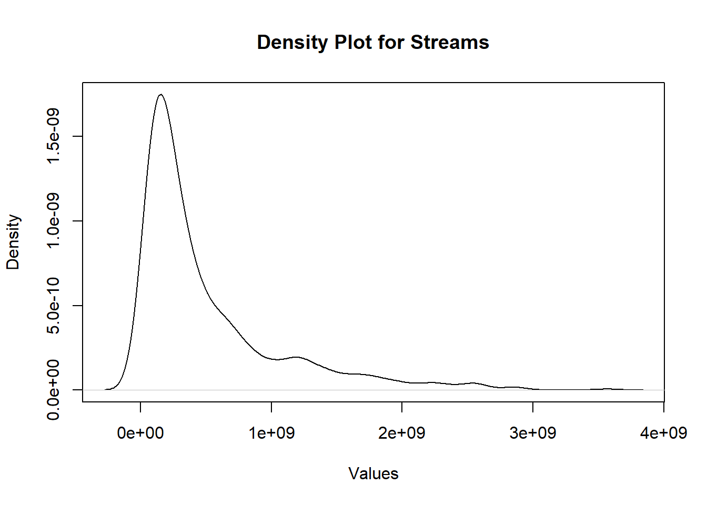
plot(density_spot_play, type = "l", main = "Density Plot for In Spotify Playlist", xlab = "Values", ylab = "Density")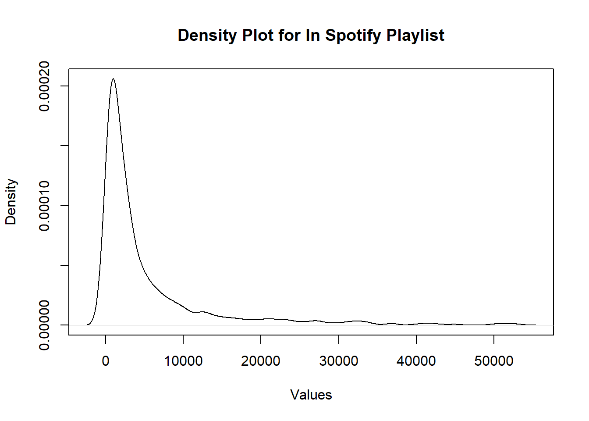
plot(density_app_play, type = "l", main = "Density Plot for In Apple Playlist", xlab = "Values", ylab = "Density")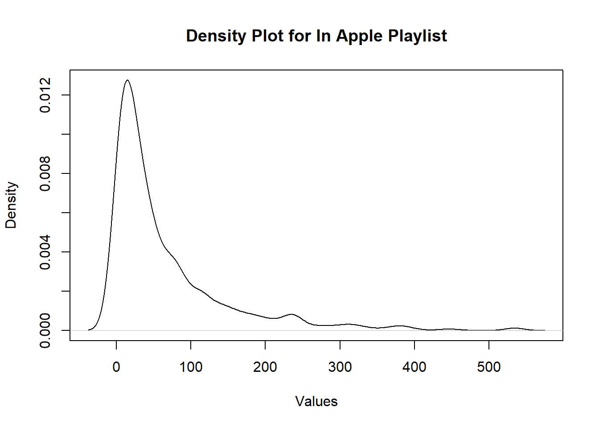
plot(density_dee_play, type = "l", main = "Density Plot for In Deezer Playlist", xlab = "Values", ylab = "Density")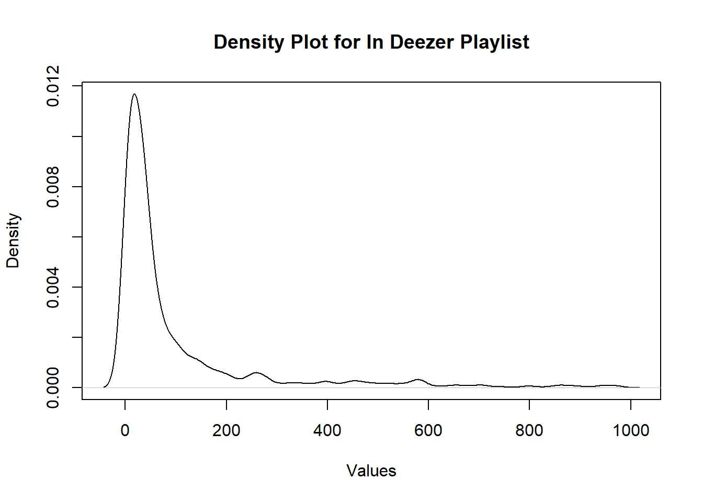
plot(density_acc, type = "l", main = "Density Plot for Acousticness", xlab = "Values", ylab = "Density")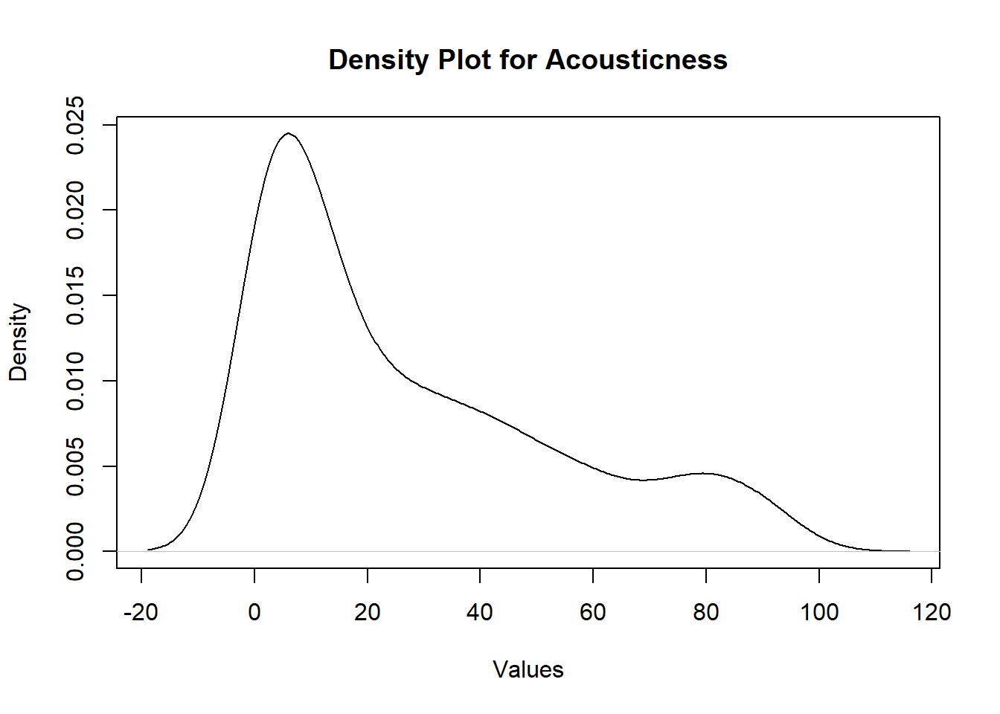
Certainly the distribution seems with a very heavy tail towards the higher values. Also looking at some key variables
It seems that just a few artist has a very high volume of streams represented by extreme values.
Just curious about the streams by artist:
#Let's create a table summarizing streams by artist
dt.train <- data.table(train)
dt.train2 <- dt.train[,list(Total.streams = sum(streams, na.rm=T), freq = .N), by = c("artist.name")]
Stream_table <- dt.train2 %>%
group_by(artist.name) %>%
summarise(Total.streams = sum(Total.streams, na.rm=TRUE), Streams.Median = median(Total.streams, na.rm=TRUE))
Stream_table <- Stream_table %>%
mutate(Total.Streams.Percent = Total.streams/(sum(Total.streams))*100.2)
Stream_table <- Stream_table[with (Stream_table, order(-Total.Streams.Percent)),]
Stream_table <- Stream_table%>%
mutate(Cum_Percent = cumsum(Total.Streams.Percent))
data_subset <- slice(Stream_table, 1:30)
# Print the subset of the data as a nice table using kable
kable(data_subset)| artist.name | Total.streams | Streams.Median | Total.Streams.Percent | Cum_Percent |
|---|---|---|---|---|
| EdSheeran | 12411186494 | 12411186494 | 3.2313660 | 3.231366 |
| TaylorSwift | 10812098960 | 10812098960 | 2.8150289 | 6.046395 |
| HarryStyles | 9098362425 | 9098362425 | 2.3688419 | 8.415237 |
| TheWeeknd | 8957974292 | 8957974292 | 2.3322906 | 10.747527 |
| BadBunny | 5925299832 | 5925299832 | 1.5427060 | 12.290233 |
| OliviaRodrigo | 4889343765 | 4889343765 | 1.2729854 | 13.563219 |
| ImagineDragons | 4434404750 | 4434404750 | 1.1545379 | 14.717757 |
| BrunoMars | 4185733280 | 4185733280 | 1.0897940 | 15.807551 |
| TheNeighbourhood | 4010009939 | 4010009939 | 1.0440428 | 16.851593 |
| ArcticMonkeys | 3781480286 | 3781480286 | 0.9845430 | 17.836136 |
| DojaCat | 3659726247 | 3659726247 | 0.9528432 | 18.788980 |
| Eminem | 3254582526 | 3254582526 | 0.8473603 | 19.636340 |
| DuaLipa | 3227639000 | 3227639000 | 0.8403454 | 20.476685 |
| LewisCapaldi | 3126653123 | 3126653123 | 0.8140528 | 21.290738 |
| OneRepublic | 3097149603 | 3097149603 | 0.8063712 | 22.097109 |
| Adele | 3035946717 | 3035946717 | 0.7904365 | 22.887546 |
| LinkinPark | 2985590613 | 2985590613 | 0.7773258 | 23.664872 |
| BTS | 2944237123 | 2944237123 | 0.7665591 | 24.431431 |
| TonesandI | 2864791672 | 2864791672 | 0.7458747 | 25.177306 |
| SZA | 2843515815 | 2843515815 | 0.7403354 | 25.917641 |
| PostMaloneSwaeLee | 2808096550 | 2808096550 | 0.7311136 | 26.648755 |
| JustinBieber | 2752482785 | 2752482785 | 0.7166341 | 27.365389 |
| KendrickLamar | 2689179073 | 2689179073 | 0.7001524 | 28.065541 |
| JamesArthur | 2686344050 | 2686344050 | 0.6994143 | 28.764955 |
| TheChainsmokersHalsey | 2591224264 | 2591224264 | 0.6746490 | 29.439604 |
| TheWeekndDaftPunk | 2565529693 | 2565529693 | 0.6679591 | 30.107563 |
| GlassAnimals | 2557975762 | 2557975762 | 0.6659924 | 30.773556 |
| ShawnMendesCamilaCabello | 2484812918 | 2484812918 | 0.6469438 | 31.420500 |
| Mne | 2450538862 | 2450538862 | 0.6380202 | 32.058520 |
| Joji | 2357270185 | 2357270185 | 0.6137369 | 32.672257 |
It is interesting to see that almost 10% of total streams are concentrated in 4 artist: Ed Sheeran, Tylor Swift, Harry Styles and The Weeknd. And 30% of all streams comes from 26 artists.
It is important to mention that here “artist” means unique artist or combination of artists per song, for example, if Taylor Swift has a song along with Ed Sheeran, then it will be considered a unique artist in the analysis.
#how many unique artist are here
n_distinct(train$artist.name)[1] 536We have 536 “unique” artist, so following previous observation we can say that 5% of the artist (26 artists) concentrate 30% of all streams.
Something that I think would be interesting is segmenting the data set in Deciles to create categories of artist from the highest to lowest streamer.
Then we can use those categories as a classification target.
#Let's create the Decile variable based on the streams to use it later in classification method
train <- train %>% mutate(class.decile = ntile(streams, 10))Now let’s explore a few other features vs streams
#Box plot for Strems and Mode, Key and Number of Artists in the song
box1 <- ggplot(train, aes(x =mode, y = streams))+
geom_boxplot(alpha=0.7, outlier.shape = NA)+
facet_wrap(.~number.art.song, scales = "free")+
theme(axis.text.x = element_text(angle = 45, hjust = 1))+
theme(legend.position = "right") +
coord_cartesian(ylim = c(1e+7, 1e+9))+
labs(title="Streams vs Mode",
subtitle = "Grouped by Number of Artist in the Song",
x ="Mode", y = "Streams")
box1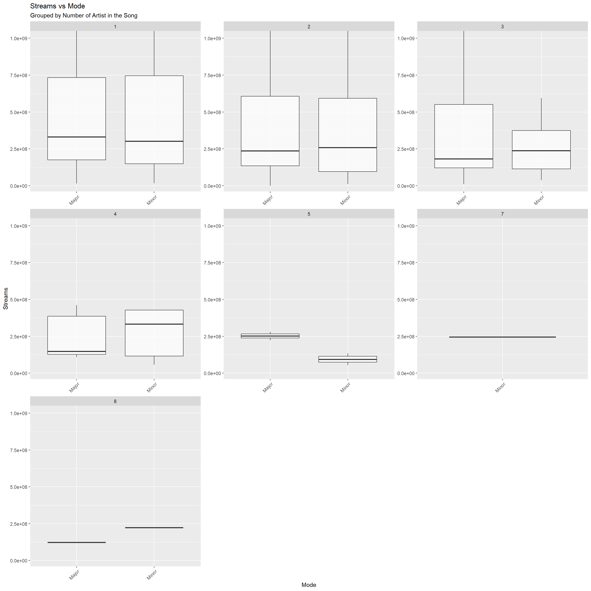
box2 <- ggplot(train, aes(x =key, y = streams))+
geom_boxplot(alpha=0.7, outlier.shape = NA)+
facet_wrap(.~number.art.song, scales = "free")+
theme(axis.text.x = element_text(angle = 45, hjust = 1))+
theme(legend.position = "right") +
coord_cartesian(ylim = c(1e+7, 1.5e+9))+
labs(title="Streams vs Key",
subtitle = "Grouped by Number of Artist in the Song",
x ="Key", y = "Streams")
box2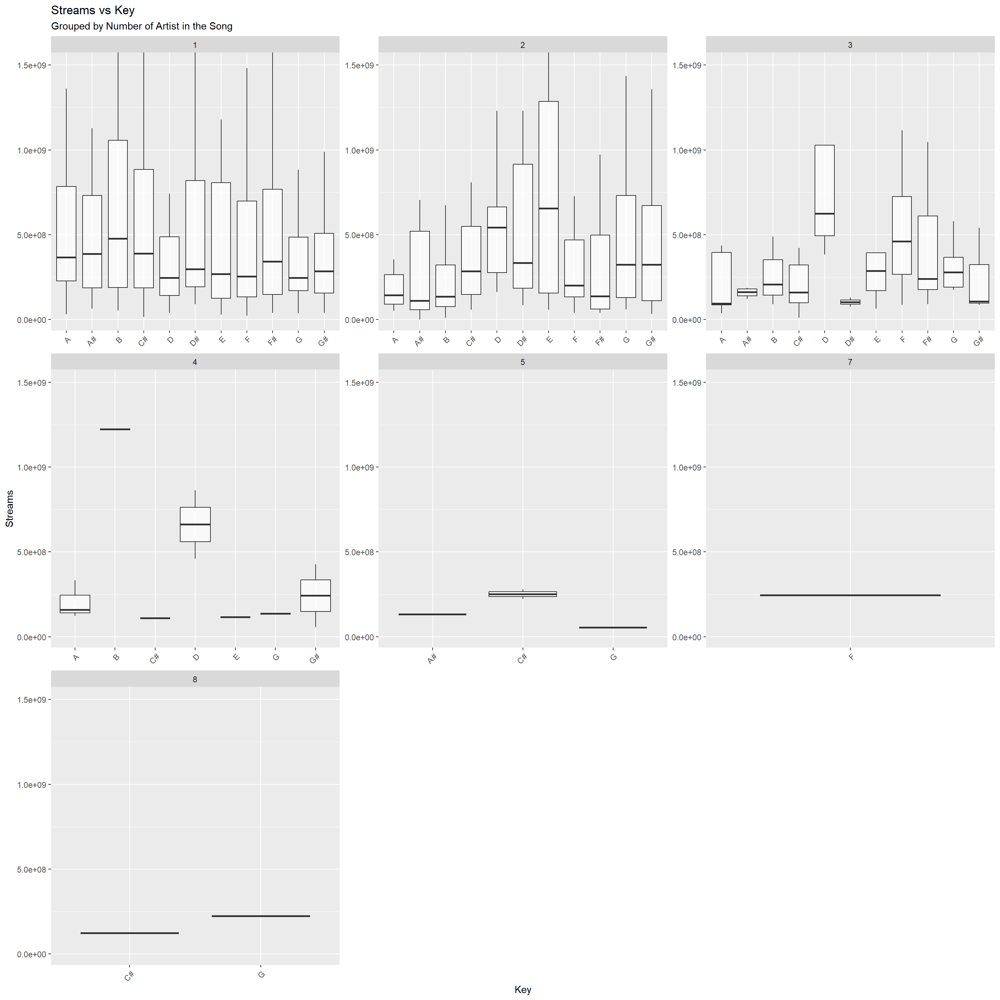
It is interesting to see that there is not too much variability when comparing streams by Mode and Number of Artist in the song, but when comparing among Keys seems that the variability increases when the song has 2 or 3 artists involved.
Let’s now look at numerical variables using correlation matrix and scatter plot.
#I'll create a dataset with only numeric variables, also I will exclude from here class.decile because is redundnat with streams
train.n <- train %>% select(-track_name, -artist.name, -key, -mode, -id, -class.decile)
# Cor Matrix
cor_matrix1 <- cor(train.n)
cor_matrix1 <- round(cor_matrix1, 2)
# Let's see a color matrix to simplify visualization
corrplot(cor_matrix1, method = "circle", tl.cex = 0.5)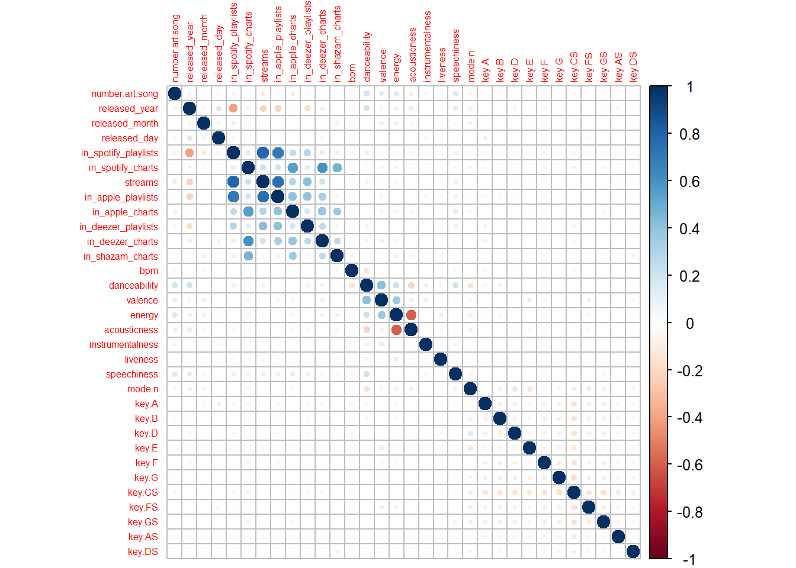
I can see that there is correlation among presence in charts and playlists among the different platforms, in particular seems there is a strong correlation between Spotify and Apple Music playlists and among the charts in all platforms. Here could be some milticolinearity that I may need to pay attention.
On the other hand there seems also some multicolinearity among song characteristics (danceability, energy, valence, acousticness, instrumentalness, liveness, speachness), but none of them seems highly correlated to streams. Also noted strong inverse correlation between acousticness and energy).
Lastly, seems that number of streams is highly and positive correlated to the number of playlists the song is included in any of the platforms (spotify, apple and deezer).
Let’s visualize Streams and playlists in scatter plots
scatter1 <- ggplot(train, aes(in_deezer_playlists,streams))+
geom_point()+
scale_y_continuous(limits=c(1e+8,1.5e+9))+
labs(title="Scatter Plot - Streams vs Deezer playlist precense",
x ="In Deezer Playlist", y = "Streams")
scatter1Warning: Removed 175 rows containing missing values (`geom_point()`).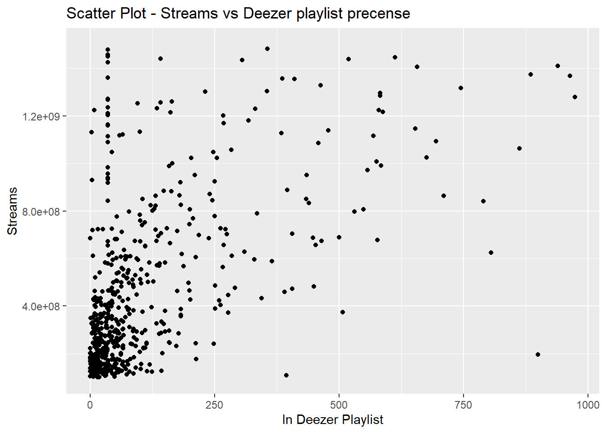
scatter2 <- ggplot(train, aes(in_apple_playlists,streams))+
geom_point()+
scale_y_continuous(limits=c(1e+8,1.5e+9))+
labs(title="Scatter Plot - Streams vs Apple playlist precense",
x ="In Apple Music Playlist", y = "Streams")
scatter2Warning: Removed 175 rows containing missing values (`geom_point()`).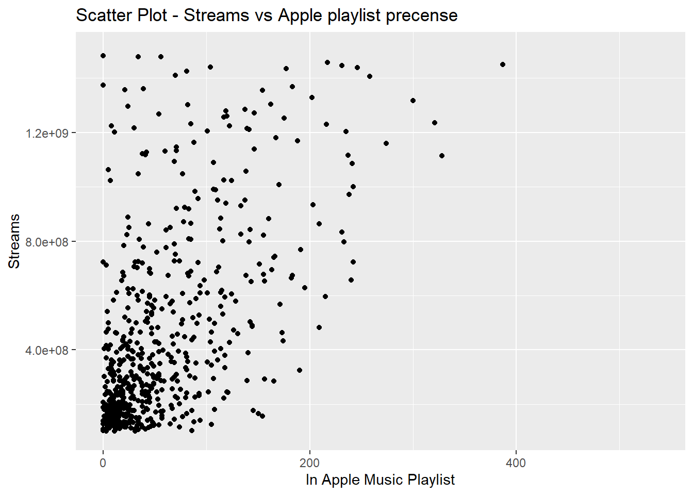
scatter3 <- ggplot(train, aes(in_spotify_playlists,streams))+
geom_point()+
scale_y_continuous(limits=c(1e+8,1.5e+9))+
labs(title="Scatter Plot - Streams vs Spotify playlist precense",
x ="In Spotify Playlist", y = "Streams")
scatter3Warning: Removed 175 rows containing missing values (`geom_point()`).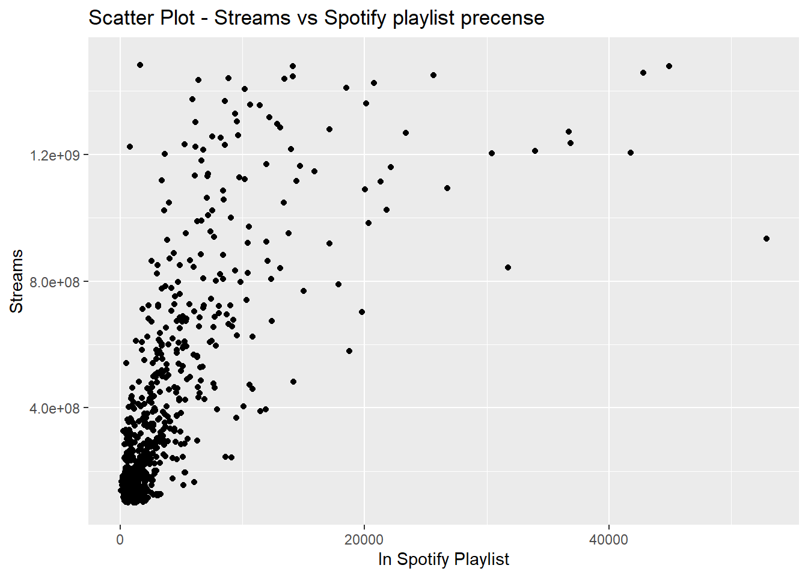
Section 3 - Evaluation Metric
I’ll focus on Regression method for modeling. I have 32 features in my training set including the numerical variables only, and since it can’t be considered a large number of features so I’ll pass on any shrinking method this time (like PCA).
Given the distribution of the target variable (streams) is very skewed and I won’t transform the variable (i.e log), I rather use a metric less sensitive to outliners. So I’ll use Median Absolute Error (mdae in R).
Section 4 - Fit models
I’ll use linear regression, lasso regression and random forest
Section 4.1 - Data preprocessing
Method 1 - Linear Regression
#Linear regression with all features
model1 <- lm(streams ~ ., data = train.n)
summary(model1)
Call:
lm(formula = streams ~ ., data = train.n)
Residuals:
Min 1Q Median 3Q Max
-1.467e+09 -1.336e+08 -3.137e+07 9.722e+07 2.190e+09
Coefficients: (1 not defined because of singularities)
Estimate Std. Error t value Pr(>|t|)
(Intercept) -8.558e+09 2.096e+09 -4.083 4.94e-05 ***
number.art.song -3.182e+07 1.279e+07 -2.487 0.01311 *
released_year 4.334e+06 1.039e+06 4.170 3.42e-05 ***
released_month 2.940e+06 3.022e+06 0.973 0.33095
released_day 3.147e+06 1.153e+06 2.730 0.00648 **
in_spotify_playlists 3.793e+04 2.047e+03 18.530 < 2e-16 ***
in_spotify_charts 4.781e+06 7.712e+05 6.200 9.45e-10 ***
in_apple_playlists 2.384e+06 2.048e+05 11.640 < 2e-16 ***
in_apple_charts -2.736e+05 2.625e+05 -1.042 0.29755
in_deezer_playlists 4.687e+05 7.101e+04 6.600 7.88e-11 ***
in_deezer_charts -8.956e+06 2.387e+06 -3.752 0.00019 ***
in_shazam_charts -4.752e+05 9.508e+04 -4.998 7.25e-07 ***
bpm 1.812e+04 3.808e+05 0.048 0.96206
danceability 3.906e+05 8.622e+05 0.453 0.65064
valence -6.102e+05 5.438e+05 -1.122 0.26225
energy -7.588e+05 8.644e+05 -0.878 0.38032
acousticness 9.046e+05 5.141e+05 1.760 0.07890 .
instrumentalness -1.709e+06 1.188e+06 -1.438 0.15076
liveness -1.696e+05 7.826e+05 -0.217 0.82847
speechiness -1.247e+06 1.086e+06 -1.149 0.25107
mode.n 4.972e+06 2.275e+07 0.219 0.82710
key.A 1.095e+07 6.603e+07 0.166 0.86837
key.B -6.133e+07 6.561e+07 -0.935 0.35027
key.D -7.028e+07 6.661e+07 -1.055 0.29171
key.E -5.650e+06 6.776e+07 -0.083 0.93357
key.F -4.791e+07 6.494e+07 -0.738 0.46090
key.G -8.322e+07 6.341e+07 -1.312 0.18977
key.CS -7.180e+07 5.961e+07 -1.204 0.22881
key.FS -9.925e+07 6.553e+07 -1.515 0.13031
key.GS -3.300e+07 6.500e+07 -0.508 0.61177
key.AS 3.077e+07 7.020e+07 0.438 0.66133
key.DS NA NA NA NA
---
Signif. codes: 0 '***' 0.001 '**' 0.01 '*' 0.05 '.' 0.1 ' ' 1
Residual standard error: 284800000 on 731 degrees of freedom
Multiple R-squared: 0.7477, Adjusted R-squared: 0.7373
F-statistic: 72.21 on 30 and 731 DF, p-value: < 2.2e-16Out of the 31 features only 10 show a significant relationship with the number of streams, most of them around presence in playlists or charts in the different platforms, only one is related to the music compositions (acousticness).
I’ll try other liner models:
#I'll log the target to see if the prediction improves
model2 <- lm(log(streams) ~ number.art.song + released_year + released_day + in_spotify_playlists + in_spotify_charts + in_apple_playlists + in_deezer_playlists + in_deezer_charts + in_shazam_charts + acousticness, data = train.n)
summary(model2)
Call:
lm(formula = log(streams) ~ number.art.song + released_year +
released_day + in_spotify_playlists + in_spotify_charts +
in_apple_playlists + in_deezer_playlists + in_deezer_charts +
in_shazam_charts + acousticness, data = train.n)
Residuals:
Min 1Q Median 3Q Max
-10.9204 -0.4216 0.0697 0.5158 2.0350
Coefficients:
Estimate Std. Error t value Pr(>|t|)
(Intercept) 1.820e+01 5.802e+00 3.138 0.00177 **
number.art.song -8.926e-02 3.492e-02 -2.556 0.01078 *
released_year 3.179e-04 2.872e-03 0.111 0.91191
released_day 8.862e-03 3.253e-03 2.724 0.00660 **
in_spotify_playlists 5.709e-05 5.663e-06 10.081 < 2e-16 ***
in_spotify_charts 2.409e-03 1.998e-03 1.205 0.22841
in_apple_playlists 3.415e-03 5.457e-04 6.259 6.51e-10 ***
in_deezer_playlists 1.585e-03 2.002e-04 7.918 8.66e-15 ***
in_deezer_charts -9.397e-03 6.756e-03 -1.391 0.16467
in_shazam_charts -4.756e-04 2.626e-04 -1.811 0.07052 .
acousticness 1.387e-04 1.142e-03 0.121 0.90340
---
Signif. codes: 0 '***' 0.001 '**' 0.01 '*' 0.05 '.' 0.1 ' ' 1
Residual standard error: 0.8143 on 751 degrees of freedom
Multiple R-squared: 0.5021, Adjusted R-squared: 0.4955
F-statistic: 75.75 on 10 and 751 DF, p-value: < 2.2e-16Actually the model deteriorates significantly when logging streams variable (Adjusted R2=.5 vs .73 with model 1).
A third model keeping only significant features founded in model 1:
#Let's keep only the significant features
model3 <- lm(streams ~ number.art.song + released_year + released_day + in_spotify_playlists + in_spotify_charts + in_apple_playlists + in_deezer_playlists + in_deezer_charts + in_shazam_charts + acousticness, data = train.n)
summary(model3)
Call:
lm(formula = streams ~ number.art.song + released_year + released_day +
in_spotify_playlists + in_spotify_charts + in_apple_playlists +
in_deezer_playlists + in_deezer_charts + in_shazam_charts +
acousticness, data = train.n)
Residuals:
Min 1Q Median 3Q Max
-1.520e+09 -1.330e+08 -3.618e+07 9.146e+07 2.143e+09
Coefficients:
Estimate Std. Error t value Pr(>|t|)
(Intercept) -9.335e+09 2.032e+09 -4.595 5.08e-06 ***
number.art.song -3.621e+07 1.223e+07 -2.961 0.003159 **
released_year 4.670e+06 1.006e+06 4.643 4.06e-06 ***
released_day 2.793e+06 1.139e+06 2.452 0.014437 *
in_spotify_playlists 3.770e+04 1.983e+03 19.011 < 2e-16 ***
in_spotify_charts 4.274e+06 6.997e+05 6.108 1.61e-09 ***
in_apple_playlists 2.357e+06 1.911e+05 12.334 < 2e-16 ***
in_deezer_playlists 4.690e+05 7.009e+04 6.691 4.33e-11 ***
in_deezer_charts -9.241e+06 2.366e+06 -3.906 0.000102 ***
in_shazam_charts -4.775e+05 9.195e+04 -5.193 2.67e-07 ***
acousticness 1.199e+06 4.000e+05 2.996 0.002823 **
---
Signif. codes: 0 '***' 0.001 '**' 0.01 '*' 0.05 '.' 0.1 ' ' 1
Residual standard error: 285100000 on 751 degrees of freedom
Multiple R-squared: 0.7401, Adjusted R-squared: 0.7366
F-statistic: 213.8 on 10 and 751 DF, p-value: < 2.2e-16The power of explanation when pulling out non-relevant features (based on the statistical significance) practically does not change.
# Make predictions for new data
predicted_1 <- predict(model1, train.n)Warning in predict.lm(model1, train.n): prediction from rank-deficient fit;
attr(*, "non-estim") has doubtful casespredicted_2 <- predict(model2, train.n)
predicted_3 <- predict(model3, train.n)
#MdAE
mdae_lm1 <- mdae(train.n$streams, predicted_1)
mdae_lm2 <- mdae(train.n$streams, predicted_2)
mdae_lm3 <- mdae(train.n$streams, predicted_3)
print(mdae_lm1)[1] 119534826print(mdae_lm2)[1] 286739457print(mdae_lm3)[1] 116079107Seems that model 3 is the best option based on the Median Absolute Error value (lowest error). Logging streams makes the model worst, and interesting to see that model 1 which includes all variables and has the highest R2 has a higher error than model 3 which includes only the most relevant features based on the p value significance.
Method 2 - Lasso Regression
Lasso is particularly useful in situations where feature selection is desired or when the dataset contains many irrelevant or redundant predictors, which seems this case. Also select the most relevant features and reduce coefficient of irrelevant features, which at the same time allows to handle multicollinearity among predictor variables which also seems appropriate given the strong correlation among playlist and chart variables.
summary(train.n) number.art.song released_year released_month released_day
Min. :1.000 Min. :1930 Min. : 1.000 Min. : 1.00
1st Qu.:1.000 1st Qu.:2020 1st Qu.: 3.000 1st Qu.: 6.00
Median :1.000 Median :2022 Median : 5.000 Median :13.00
Mean :1.539 Mean :2018 Mean : 6.004 Mean :13.86
3rd Qu.:2.000 3rd Qu.:2022 3rd Qu.: 9.000 3rd Qu.:22.00
Max. :8.000 Max. :2023 Max. :12.000 Max. :31.00
in_spotify_playlists in_spotify_charts streams in_apple_playlists
Min. : 31.0 Min. : 0.00 Min. :2.762e+03 Min. : 0.00
1st Qu.: 853.8 1st Qu.: 0.00 1st Qu.:1.397e+08 1st Qu.: 13.00
Median : 2167.0 Median : 3.00 Median :2.867e+08 Median : 34.50
Mean : 5188.8 Mean : 11.86 Mean :5.051e+08 Mean : 66.10
3rd Qu.: 5412.0 3rd Qu.: 15.75 3rd Qu.:6.573e+08 3rd Qu.: 83.75
Max. :52898.0 Max. :147.00 Max. :3.563e+09 Max. :537.00
in_apple_charts in_deezer_playlists in_deezer_charts in_shazam_charts
Min. : 0.00 Min. : 0.00 Min. : 0.000 Min. : 0.0
1st Qu.: 7.00 1st Qu.: 13.00 1st Qu.: 0.000 1st Qu.: 0.0
Median : 38.00 Median : 35.00 Median : 0.000 Median : 2.0
Mean : 52.61 Mean : 97.88 Mean : 2.554 Mean : 50.1
3rd Qu.: 87.00 3rd Qu.: 93.00 3rd Qu.: 2.000 3rd Qu.: 31.0
Max. :275.00 Max. :974.00 Max. :58.000 Max. :953.0
bpm danceability valence energy
Min. : 65.00 Min. :23.00 Min. : 4.00 Min. : 9.00
1st Qu.: 98.25 1st Qu.:57.00 1st Qu.:32.00 1st Qu.:54.00
Median :121.00 Median :69.00 Median :51.00 Median :66.00
Mean :122.36 Mean :66.69 Mean :51.50 Mean :64.22
3rd Qu.:140.00 3rd Qu.:78.00 3rd Qu.:70.75 3rd Qu.:77.00
Max. :206.00 Max. :95.00 Max. :97.00 Max. :97.00
acousticness instrumentalness liveness speechiness
Min. : 0.00 Min. : 0.000 Min. : 3.00 Min. : 2.00
1st Qu.: 6.00 1st Qu.: 0.000 1st Qu.:10.00 1st Qu.: 4.00
Median :17.00 Median : 0.000 Median :12.00 Median : 6.00
Mean :27.42 Mean : 1.682 Mean :18.12 Mean :10.12
3rd Qu.:44.00 3rd Qu.: 0.000 3rd Qu.:23.00 3rd Qu.:11.00
Max. :97.00 Max. :91.000 Max. :91.00 Max. :64.00
mode.n key.A key.B key.D
Min. :0.000 Min. :0.00000 Min. :0.0000 Min. :0.00000
1st Qu.:0.000 1st Qu.:0.00000 1st Qu.:0.0000 1st Qu.:0.00000
Median :1.000 Median :0.00000 Median :0.0000 Median :0.00000
Mean :0.584 Mean :0.08005 Mean :0.0853 Mean :0.08136
3rd Qu.:1.000 3rd Qu.:0.00000 3rd Qu.:0.0000 3rd Qu.:0.00000
Max. :1.000 Max. :1.00000 Max. :1.0000 Max. :1.00000
key.E key.F key.G key.CS
Min. :0.00000 Min. :0.00000 Min. :0.0000 Min. :0.0000
1st Qu.:0.00000 1st Qu.:0.00000 1st Qu.:0.0000 1st Qu.:0.0000
Median :0.00000 Median :0.00000 Median :0.0000 Median :0.0000
Mean :0.06693 Mean :0.09055 Mean :0.1076 Mean :0.2205
3rd Qu.:0.00000 3rd Qu.:0.00000 3rd Qu.:0.0000 3rd Qu.:0.0000
Max. :1.00000 Max. :1.00000 Max. :1.0000 Max. :1.0000
key.FS key.GS key.AS key.DS
Min. :0.00000 Min. :0.00000 Min. :0.00000 Min. :0.00000
1st Qu.:0.00000 1st Qu.:0.00000 1st Qu.:0.00000 1st Qu.:0.00000
Median :0.00000 Median :0.00000 Median :0.00000 Median :0.00000
Mean :0.08399 Mean :0.09055 Mean :0.05643 Mean :0.03675
3rd Qu.:0.00000 3rd Qu.:0.00000 3rd Qu.:0.00000 3rd Qu.:0.00000
Max. :1.00000 Max. :1.00000 Max. :1.00000 Max. :1.00000 #this time I'll separate target variable on a different object because I feel will be easier to handle
stream.train <- train.n$streams
#Now will exclude streams from the dataset and predicted values from linear regression
train.n2 <- train.n %>% select(-streams)
#I'll scale train features
xtrain.n2.scaled <- scale(train.n2)
#I'll scale also streams just to used in the cross validation. I rather use scaling as it keeps the distribution
y.train.n2.scaled <- scale(stream.train)
#I'll create the lambda sequence value
lambda.array <- seq(from=0.1, to= 100, by=0.1)
#Cross validation using cv.glmnet
cv.lasso.model <- cv.glmnet(xtrain.n2.scaled, y.train.n2.scaled, alpha=1, lambda=lambda.array)
plot(cv.lasso.model, xvar = 'lambda')Warning in plot.window(...): "xvar" is not a graphical parameterWarning in plot.xy(xy, type, ...): "xvar" is not a graphical parameterWarning in axis(side = side, at = at, labels = labels, ...): "xvar" is not a
graphical parameter
Warning in axis(side = side, at = at, labels = labels, ...): "xvar" is not a
graphical parameterWarning in box(...): "xvar" is not a graphical parameterWarning in title(...): "xvar" is not a graphical parameter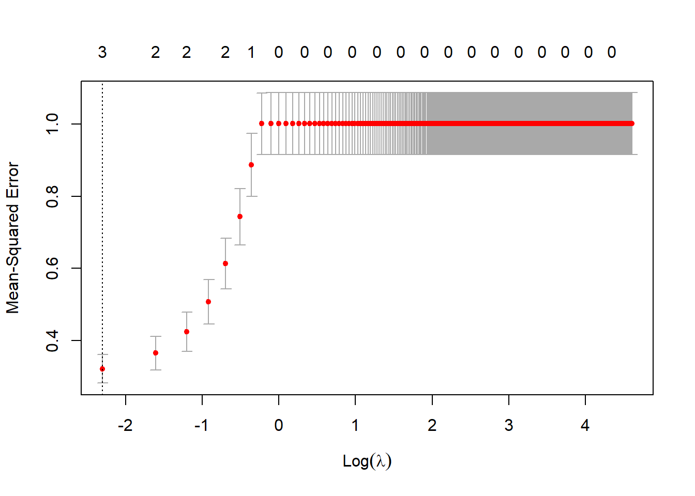
#getting the best lambda
best.lasso.lambda <- cv.lasso.model$lambda.min
best.lasso.lambda[1] 0.1#MSE
mean.lasso.error <- mean(cv.lasso.model$cvm)
print(mean.lasso.error)[1] 0.9984841print(coef(cv.lasso.model))32 x 1 sparse Matrix of class "dgCMatrix"
s1
(Intercept) 3.050052e-17
number.art.song .
released_year .
released_month .
released_day .
in_spotify_playlists 4.395318e-01
in_spotify_charts .
in_apple_playlists 3.224483e-01
in_apple_charts .
in_deezer_playlists 5.549454e-02
in_deezer_charts .
in_shazam_charts .
bpm .
danceability .
valence .
energy .
acousticness .
instrumentalness .
liveness .
speechiness .
mode.n .
key.A .
key.B .
key.D .
key.E .
key.F .
key.G .
key.CS .
key.FS .
key.GS .
key.AS .
key.DS . Interesting to see that Lasso model keeps the presence of the song in playlist on the 3 main streaming platforms.
Method 3 - Random Forest
Lastly, I’ll use random forest and this time I’ll use the class.deciles created previously to use it as classification.
#First I'll bring back as a separate object the class.deciles variable
train.n2$class.decile <- train$class.decile
train.n2$class.decile <- as.factor(train.n2$class.decile)Tune the hyperparameters:
tune_spec <- rand_forest(trees = tune(), mtry = tune()) %>%
set_engine("ranger") %>%
set_mode("classification")
#starting with this values
rf_grid <- grid_regular(
trees(range = c(100, 800)),
mtry(range = c(2, 31)),
levels = 5)
set.seed(1977)
folds <- vfold_cv(train.n2, v = 5)
rf_wf <- workflow() %>%
add_model(tune_spec) %>%
add_formula(class.decile ~ .)
#For the purpose to train the model I'll use F1 as metric, despite I'll use mdae for measuring performance later
my_metrics <- metric_set(f_meas)
rf_res <-
rf_wf %>%
tune_grid(resamples = folds, grid = rf_grid, metrics = my_metrics)Visualize the results and best parameters:
rf_res %>%
collect_metrics() %>%
filter(.metric == "f_meas") %>%
select(mtry, trees, mean) %>%
ggplot(aes(mtry, trees, fill = mean)) +
geom_tile() 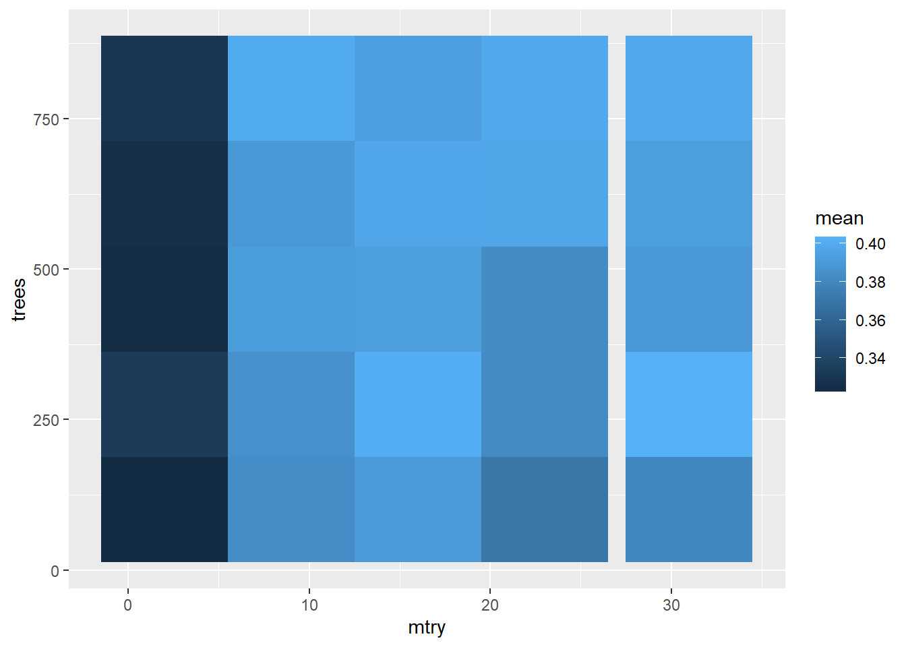
Best Parameters:
best_params <- rf_res %>%
select_best("f_meas")
best_params# A tibble: 1 × 3
mtry trees .config
<int> <int> <chr>
1 31 275 Preprocessor1_Model22Explore a different region
#Now with this values
rf_grid2 <- grid_regular(
trees(range = c(100, 500)),
mtry(range = c(10, 31)),
levels = 5)
set.seed(1979)
folds2 <- vfold_cv(train.n2, v = 10)
rf_res2 <-
rf_wf %>%
tune_grid(resamples = folds2, grid = rf_grid2, metrics = my_metrics)
rf_res2 %>%
collect_metrics() %>%
filter(.metric == "f_meas") %>%
select(mtry, trees, mean) %>%
ggplot(aes(mtry, trees, fill = mean)) +
geom_tile() 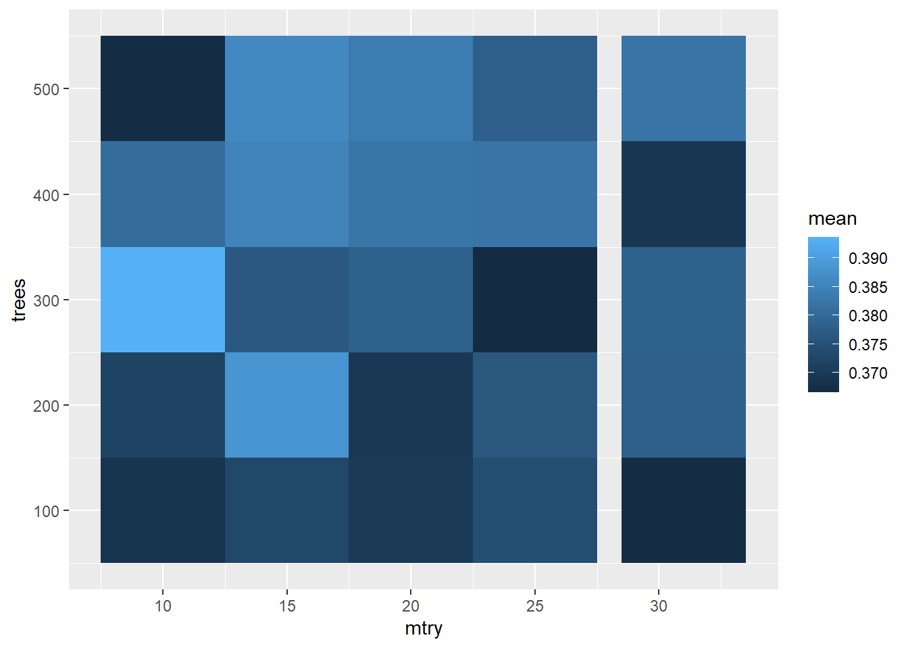
best_params2 <- rf_res2 %>%
select_best("f_meas")
best_params2# A tibble: 1 × 3
mtry trees .config
<int> <int> <chr>
1 10 300 Preprocessor1_Model03Section 4.2 - Choose hyperparameters; fit and test models
First I’ll make adjustments as training set, to the test set.
summary(test) track_name artist.name number.art.song released_year
Length:191 Length:191 Min. :1.000 Min. :1957
Class :character Class :character 1st Qu.:1.000 1st Qu.:2020
Mode :character Mode :character Median :1.000 Median :2022
Mean :1.623 Mean :2019
3rd Qu.:2.000 3rd Qu.:2022
Max. :7.000 Max. :2023
released_month released_day in_spotify_playlists in_spotify_charts
Min. : 1.000 Min. : 1.00 Min. : 86 Min. : 0.00
1st Qu.: 3.000 1st Qu.: 6.00 1st Qu.: 1006 1st Qu.: 0.00
Median : 6.000 Median :14.00 Median : 2415 Median : 4.00
Mean : 6.152 Mean :14.22 Mean : 5245 Mean :12.59
3rd Qu.: 9.000 3rd Qu.:22.00 3rd Qu.: 5868 3rd Qu.:20.00
Max. :12.000 Max. :31.00 Max. :43899 Max. :83.00
streams in_apple_playlists in_apple_charts in_deezer_playlists
Min. :1.365e+06 Min. : 0.00 Min. : 0.00 Min. : 0.0
1st Qu.:1.509e+08 1st Qu.: 13.00 1st Qu.: 8.00 1st Qu.: 14.0
Median :3.041e+08 Median : 32.00 Median : 39.00 Median : 39.0
Mean :5.492e+08 Mean : 74.66 Mean : 49.09 Mean :132.8
3rd Qu.:7.416e+08 3rd Qu.:107.00 3rd Qu.: 81.50 3rd Qu.:150.8
Max. :3.704e+09 Max. :672.00 Max. :199.00 Max. :965.0
NA's :13
in_deezer_charts in_shazam_charts bpm key
Min. : 0.000 Min. : 0.00 Min. : 71.0 Length:191
1st Qu.: 0.000 1st Qu.: 0.00 1st Qu.:101.5 Class :character
Median : 0.000 Median : 3.00 Median :120.0 Mode :character
Mean : 3.115 Mean : 43.64 Mean :123.2
3rd Qu.: 2.000 3rd Qu.: 34.75 3rd Qu.:141.0
Max. :45.000 Max. :727.00 Max. :206.0
NA's :13
mode danceability valence energy
Length:191 Min. :25.0 Min. : 4.00 Min. :20.00
Class :character 1st Qu.:58.0 1st Qu.:35.00 1st Qu.:52.50
Mode :character Median :70.0 Median :52.00 Median :66.00
Mean :68.1 Mean :51.15 Mean :64.51
3rd Qu.:79.0 3rd Qu.:68.00 3rd Qu.:76.50
Max. :96.0 Max. :97.00 Max. :97.00
acousticness instrumentalness liveness speechiness
Min. : 0.00 Min. : 0.000 Min. : 3.00 Min. : 2.00
1st Qu.: 6.00 1st Qu.: 0.000 1st Qu.:10.00 1st Qu.: 4.00
Median :18.00 Median : 0.000 Median :13.00 Median : 6.00
Mean :25.62 Mean : 1.178 Mean :18.59 Mean :10.19
3rd Qu.:38.50 3rd Qu.: 0.000 3rd Qu.:25.50 3rd Qu.:13.50
Max. :94.00 Max. :51.000 Max. :97.00 Max. :45.00
id
Length:191
Class :character
Mode :character
# Let's review the character variables and create dummies that can be use later when building the models
unique(test$key) [1] "F" "G#" "B" "D" "G" "A#" "E" "C#" "" "F#" "A" "D#"unique(test$mode)[1] "Major" "Minor"# Exploring the frequency of the values in the key
key.table<-table(test$key)
key.table
A A# B C# D D# E F F# G G#
21 14 14 16 26 19 5 11 20 9 14 22 #replacing blank cells with NA
test$key <- na_if(test$key, '')
#replacing NA with the most frequent value in the feature, in this case C#
test <- test %>%
mutate(key = ifelse(is.na(key), "C#", key))
#I'll create dummy for key and mode
test <- test %>%
mutate(mode.n = case_when(
mode == "Major" ~ 1,
mode == "Minor" ~ 0,
))%>%
mutate(key.A = case_when(
key == "A" ~ 1,
TRUE ~ 0))%>%
mutate(key.B = case_when(
key == "B" ~ 1,
TRUE ~ 0))%>%
mutate(key.D = case_when(
key == "D" ~ 1,
TRUE ~ 0))%>%
mutate(key.E = case_when(
key == "E" ~ 1,
TRUE ~ 0))%>%
mutate(key.F = case_when(
key == "F" ~ 1,
TRUE ~ 0))%>%
mutate(key.G = case_when(
key == "G" ~ 1,
TRUE ~ 0))%>%
mutate(key.CS = case_when(
key == "C#" ~ 1,
TRUE ~ 0))%>%
mutate(key.FS = case_when(
key == "F#" ~ 1,
TRUE ~ 0))%>%
mutate(key.GS = case_when(
key == "G#" ~ 1,
TRUE ~ 0))%>%
mutate(key.AS = case_when(
key == "A#" ~ 1,
TRUE ~ 0))%>%
mutate(key.DS = case_when(
key == "D#" ~ 1,
TRUE ~ 0))
#Lastly I'll replace the some NAs using median. For in_deezer_playlists, in_shazam_charts and stream
median.deezer.playlist.ts <- median(test$in_deezer_playlists, na.rm = TRUE)
median.shazam.chart.ts <- median(test$in_shazam_charts, na.rm = TRUE)
test <- test %>%
mutate(in_deezer_playlists = ifelse(is.na(in_deezer_playlists), median.deezer.playlist.t, in_deezer_playlists)) %>%
mutate(in_shazam_charts = ifelse(is.na(in_shazam_charts), median.shazam.chart.t, in_shazam_charts))
#Let's create the Decile variable based on the streams to use it later in classification method
test <- test %>% mutate(class.decile = ntile(streams, 10))
#now the dataset for testing, removing non-numeric or irrelevant variables
test.n <- test %>% select(-track_name, -artist.name, -key, -mode, -id, -class.decile)
#extracting test actual streams
stream.test <- test.n$streamsLinear regression fitting and testing
# Make predictions for new data
lm.predicted.1 <- predict(model1, test.n)Warning in predict.lm(model1, test.n): prediction from rank-deficient fit;
attr(*, "non-estim") has doubtful caseslm.predicted.3 <- predict(model3, test.n)
#Checking MdAE
mdae_lm1.final <- mdae(stream.test, lm.predicted.1)
print(mdae_lm1.final)[1] 135837770mdae_lm3.final <- mdae(stream.test, lm.predicted.3)
print(mdae_lm3.final)[1] 123474556Lasso Regression fitting and testing
#Now will exclude streams from the dataset and predicted values from linear regression
test.n2 <- test.n %>% select(-streams)
#I'll scale test features
xtest.n2.scaled <- scale(test.n2)
#fit the model using the best lambda in lasso
lasso.model <- glmnet(xtest.n2.scaled, stream.test, alpha=1, lambda=best.lasso.lambda)
coef(lasso.model)32 x 1 sparse Matrix of class "dgCMatrix"
s0
(Intercept) 549175763
number.art.song -14064461
released_year -28898388
released_month 15279704
released_day 11015034
in_spotify_playlists 226034156
in_spotify_charts 151290594
in_apple_playlists 249601103
in_apple_charts 21338444
in_deezer_playlists 114996405
in_deezer_charts -69063564
in_shazam_charts -126032019
bpm -3506104
danceability -47405242
valence -7346601
energy -18401617
acousticness -17181614
instrumentalness 7630502
liveness 14395334
speechiness -4810544
mode.n -13167404
key.A -12077321
key.B 5200964
key.D 5981359
key.E 6473279
key.F 17801687
key.G -21177792
key.CS -4135984
key.FS 24496493
key.GS -19115050
key.AS 1662262
key.DS 11780702#Predict streams in test set
ytest.lasso.pred <- predict(lasso.model, newx = xtest.n2.scaled, penalty = best.lasso.lambda)
#Checking MdAE
mdae_lasso.final <- mdae(stream.test, ytest.lasso.pred)
print(mdae_lasso.final)[1] 113556904Random Forest fitting and testing
#First I need to bring back class.decile for the test set
test.n2$class.decile <- test$class.decile
test.n2$class.decile <- as.factor(test.n2$class.decile)
test.class <- test.n2$class.decileWill first check model 1 (mtry=31 and trees=275)
#fit the model 1
rf1 <- rand_forest(mtry=31, trees=275) %>%
set_engine("ranger") %>%
set_mode("classification")
rf_fit1 <- rf1 %>%
fit(class.decile ~ ., data = test.n2)
#Predict on the test set using first parameters:
test_pred1 <- rf_fit1 %>%
predict(test.n2) %>%
bind_cols(test.n2) %>%
select(class.decile, .pred_class)
test_pred1 %>%
my_metrics(truth = class.decile, estimate = .pred_class)# A tibble: 1 × 3
.metric .estimator .estimate
<chr> <chr> <dbl>
1 f_meas macro 0.995#Transforming to numeric to be able to calculate mdae
rf1.pred <- test_pred1$.pred_class
rf1.pred <- as.numeric(rf1.pred)
test.class.n <- as.numeric(test.class)
#Let's see the consufion matrix
confusion_matrix1 <- table(test.class.n, rf1.pred)
confusion_matrix1 rf1.pred
test.class.n 1 2 3 4 5 6 7 8 9 10
1 20 0 0 0 0 0 0 0 0 0
2 0 19 0 0 0 0 0 0 0 0
3 0 0 19 0 0 0 0 0 0 0
4 0 0 0 19 0 0 0 0 0 0
5 0 0 0 0 18 0 0 0 1 0
6 0 0 0 0 0 19 0 0 0 0
7 0 0 0 0 0 0 19 0 0 0
8 0 0 0 0 0 0 0 19 0 0
9 0 0 0 0 0 0 0 0 19 0
10 0 0 0 0 0 0 0 0 0 19#Median Absolute Error
mdae_rf1.final <- mdae(test.class.n, rf1.pred)
print(mdae_rf1.final)[1] 0It is important to mention that Median Absolute Error is not the ideal metric for Random Forest performance, it is more common using Accuracy, F1 Score, Precision, ROC AUC, Recall, etc. MdAE is more appropiate for regression type of method (instead of classification), however if I need to use the same metric for all methods, MdAE is feasible.
Now model 2 (mtry=10 and trees=300)
#fit the model 2
rf2 <- rand_forest(mtry=10, trees=300) %>%
set_engine("ranger") %>%
set_mode("classification")
rf_fit2 <- rf2 %>%
fit(class.decile ~ ., data = test.n2)
#Predict on the test set using first parameters:
test_pred2 <- rf_fit2 %>%
predict(test.n2) %>%
bind_cols(test.n2) %>%
select(class.decile, .pred_class)
test_pred2 %>%
my_metrics(truth = class.decile, estimate = .pred_class)# A tibble: 1 × 3
.metric .estimator .estimate
<chr> <chr> <dbl>
1 f_meas macro 0.990rf2.pred2 <- test_pred2$.pred_class
rf2.pred2 <- as.numeric(rf2.pred2)
test.class.n2 <- as.numeric(test.class)
#Let's see the consufion matrix
confusion_matrix2 <- table(test.class.n, rf2.pred2)
confusion_matrix2 rf2.pred2
test.class.n 1 2 3 4 5 6 7 8 9 10
1 20 0 0 0 0 0 0 0 0 0
2 0 19 0 0 0 0 0 0 0 0
3 0 0 19 0 0 0 0 0 0 0
4 0 0 0 19 0 0 0 0 0 0
5 0 0 0 0 18 0 0 0 1 0
6 0 0 0 0 0 18 0 0 1 0
7 0 0 0 0 0 0 19 0 0 0
8 0 0 0 0 0 0 0 19 0 0
9 0 0 0 0 0 0 0 0 19 0
10 0 0 0 0 0 0 0 0 0 19#Median Absolute Error
mdae_rf2.final <- mdae(test.class.n, rf2.pred2)
print(mdae_rf2.final)[1] 0Section 6 - Compare models
Compare and evaluate the models in terms of overfitting vs underfitting, bias vs variance tradeoff, flexibility vs interpretability.
Here a summary of the Median Absolute Errors for each model:
# Example objects
MdAE_Linear_Regression_Model_1 <- c(135968120)
MdAE_Linear_Regression_Model_3 <- c(123474556)
MdAE_Lasso <- c(113643028)
MdAE_RF_1 <- c(0)
MdAE_RF_2 <- c(0)
# Create a data frame
models.table <- data.frame("MdAE Linear Regression Model1" = MdAE_Linear_Regression_Model_1, "MdAE Linear Regression Model3" = MdAE_Linear_Regression_Model_3, "MdAE Lasso" = MdAE_Lasso, "MdAE RF1" = MdAE_RF_1, "MdAE RF2" = MdAE_RF_2)
# Print the data frame with kable
print(models.table) MdAE.Linear.Regression.Model1 MdAE.Linear.Regression.Model3 MdAE.Lasso
1 135968120 123474556 113643028
MdAE.RF1 MdAE.RF2
1 0 0The first thing to note here is that the absolute error in the hundred millions seems high to me, overall the variables in the different models while explain a good proportion of the number of streams the performance doesn’s seems the best to me.
The above statement seems not applying to the Random Forest method which has a zero error but this could mean a overfitting, even trying different hyperparameters it ended in almost zero error. Perhaps when classifying the number streams in 10 categories based on deciles of the distribution facilitate the prediction. Still it does sound like a overfitting.
Then linear regression and lasso a more balanced model, with a more “reasonable” error iwhile high, and offers better interpretability by simplifying the model.
Then among linear and lasso regression, seems that Linear Model 3 offer a good model in terms of simplicity and performance compared to linear model 1 (lower error and less predictors).
Lasso seems to offers a lot more interpretability without being too much underfitting. This model uses only 3 main variables and have the lowest Median Absolute Error (besides Random Forest). However even though doesn’t seems underfitting too much (by judging for the MdAE), it can be too simple so maybe it can imply biased model.
Section 7 - Ethical implications
In the case of this model and what I have been trying to do which is predict number of songs streams, and based on the features collected in this dataset (nothing seems too personal in te data collected), I don’t see a big ethical risks here.
However, as all the marketing research analysis, at the end, it may result on manipulation of the user to generate more engagement in the platform which at the end is probably the end goal of music streaming platforms: more engagement for the users to spend more time in the platform.